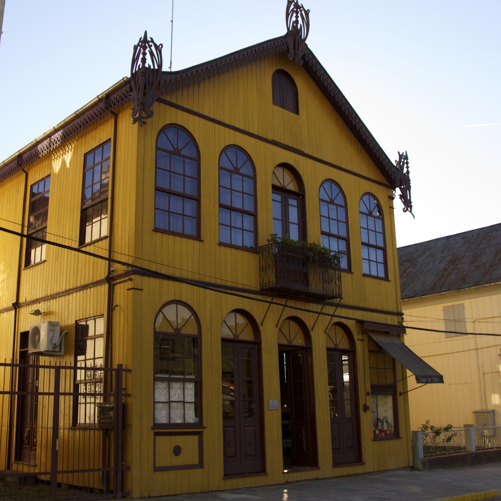

Welcome
Project by: Natália B. Guzzo and Guilherme D. Garcia
We are working on documenting Talian, an understudied variety of Veneto spoken in several areas of Brazil. Our work involves the development of a corpus of written materials in Talian as well as data collection through fieldwork.
In the 19th century, many Italians immigrated to North and South America. In Brazil, they first settled in the southeastern region, where many were employed in coffee farms. Later, other immigrants settled in the southern region (especially in the southernmost state of Rio Grande do Sul), where they were offered land (through government loans) but faced harsh conditions to farm it. As time went by, a variety of Veneto, Brazilian Veneto, developed in the area(s) where the immigrants settled. Speakers refer to this variety as Talian.
Although Talian is spoken in several areas of Brazil, our main focus is on a region called Italian Immigration Area (IIA), the area of Rio Grande do Sul where Italian immigrants arrived first. The photo shown here was taken in the town of Antônio Prado.
The Italian Immigration Area in Brazil
In the map below, the towns and cities in red have Talian as their co-official language, alongside (Brazilian) Portuguese. They gray circle is an approximation representing the IIA.
Acknowledgments
Our project would not be possible without the help of the following people:
- Our language consultants, Maria Inês Chilanti and Lenise Baldin Cavazzola.
- Our experiment participants.
- Our research assistants: Émilie Dubé, Alexandra Lancaster, Ray Marks, Fabian McCarthy, Lamia Oudni, Carolyn Rathgeber, and Jovia Wong (McGill); Jenna Gramlich (Ball State); Hannah Markert (Saint Mary’s); Gabriel Frazer-Mckee (Université Laval).
We also thank Dr. Valdemir Guzzo (Natália’s dad) for helping us find additional corpus materials as well as more information on the history of the IIA.
Funding
This project was awarded a Jovem Talento grant (2021–2022) by Brazil’s federal funding agency CAPES (Coordination for the Improvement of Higher Education); declined due to conflicting schedule issues related to the COVID-19 pandemic.
Copyright © 2024 Natália Brambatti Guzzo